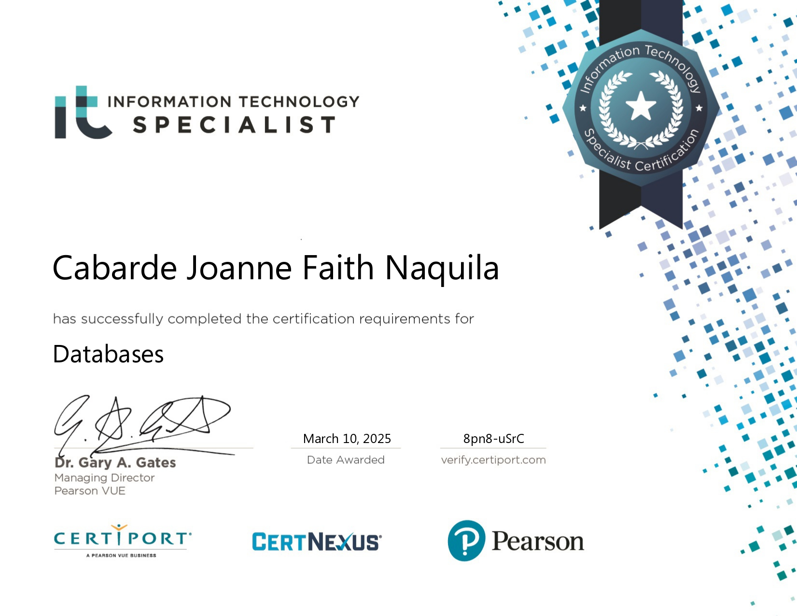

RNM Hardware System
Full-featured retail management platform handling sales, inventory tracking, purchasing workflows, and user management.
Role: Software Quality Assurance
Tech: Laravel, MySQL, Business Logic
View on GitHubI am a passionate Computer Science student with an engineering foundation in backend software development, database design, and intelligent systems. I thrive on translating complex technical specifications into reliable, production-ready code. My development approach heavily prioritizes clean code architectures, relational data integrity, and rigorous structural testing. Having led the Seismosense IoT project and independently architected Veridian, a hybrid AI and RAG conversational agent, I have a proven track record of owning full-stack development lifecycles. I am currently seeking Software Developer OJT and internship opportunities to contribute high-quality engineering practices to innovative team sprints.
My toolkit for building and testing robust software solutions.
A selection of university and personal projects combining machine learning, web development, and embedded systems.
Full-featured retail management platform handling sales, inventory tracking, purchasing workflows, and user management.
Role: Software Quality Assurance
Tech: Laravel, MySQL, Business Logic
View on GitHubComplete hospitality platform with room booking, guest management, reservations, and automated billing for efficient operations.
Role: Back-End & Software Quality Assurance
Tech: HTML, CSS, JavaScript, Booking System
View on GitHubIoT earthquake detection system with real-time vibration monitoring, auto-calibration, and automated alarms.
Role: Project Lead
Tech: Arduino, ADXL335, Embedded Systems
View on GitHubAI-powered fashion assistant using RAG architecture with semantic embeddings for personalized product recommendations.
Role: Sole Developer
Tech: Python, RAG, LLM, Groq API, Flask
View on GitHubAI model for predicting banana leaf diseases using deep learning and computer vision to help farmers identify crop issues early.
Role: Co-Researcher & Data Analyst
Tech: EfficientNet, Deep Learning, Python
View on GitHubComprehensive casino chip exchange system featuring robust architecture, detailed class diagrams, and seamless transaction management.
Role: Project Lead & Quality Assurance
Tech: Java, SQL
View on GitHubProfessional certifications from industry-recognized organizations.
IT Specialist — Pearson VUE
May 22, 2026
Proficiency in modern web markup and styling standards for professional web development.

IT Specialist — Pearson VUE
March 10, 2025
Expertise in database design, management, optimization, and implementation for enterprise systems.